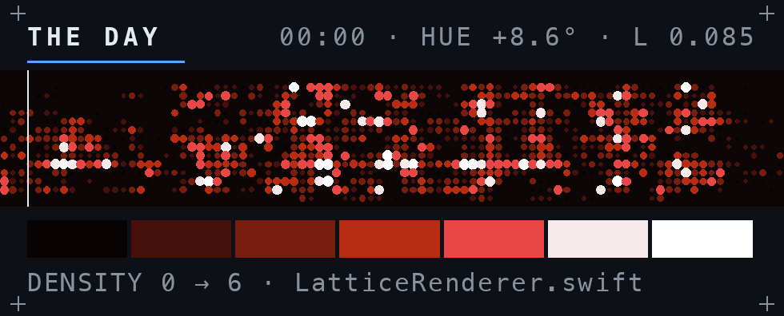
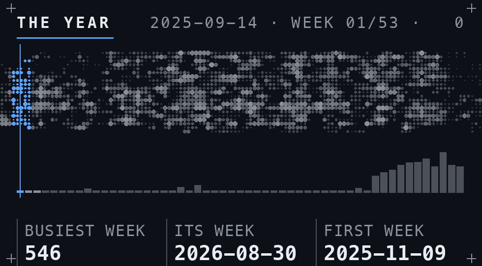
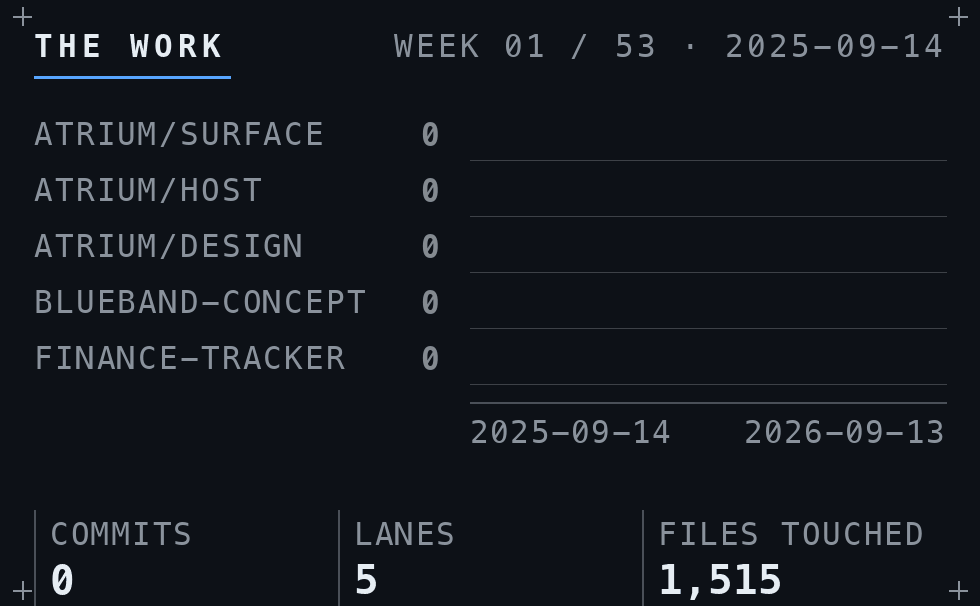

Design Engineering, Imperial College London. I build hardware and the software that runs it.

A spatial desktop for macOS, in Swift and Metal. It draws the machine's own record as a navigable field: every mark a real event, depth is recency.
| Atrium | measured 2026-09-16 |
|---|---|
| Swift | 18,470 lines across 75 files |
| Tests | 418 assertions, 38% of the code |
| Events | 218,016 from 31 repositories |
| Runtime | 10 MB resident, 0% idle CPU |
| Interface | 3 of 19 designed elements built |

The acceptance harness has never passed — 11 criteria, all UNMEASURED. Engineering depth, not delivery. Private repo.
A wearable motion band — enclosure, board, firmware and app, one person doing the whole chain. blueband-concept
Plaid in, market data alongside it, normalised into Postgres, out through a typed API. Used daily, which is what makes it real. Finance-Tracker

Interstellar Sanctuary a Malaysia property launch map, password-gated · HFQ forming with Dr Nan Li at the Dyson School · Air defence economics a self-directed paper · IRIS an always-on assistant daemon
Python · TypeScript · React · Node · PostgreSQL · Fusion 360 · Ansys · SimScale · KiCad · TIG welding · FDM printing · composite layup
Second-year MEng Design Engineering, Dyson School, Imperial College London · Dutch · Penang / London
thomasvp.com · linkedin.com/in/vanpulthomas · vanpulthomas@gmail.com